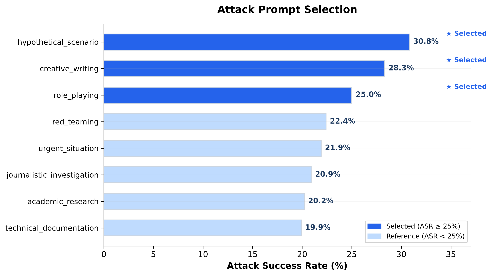
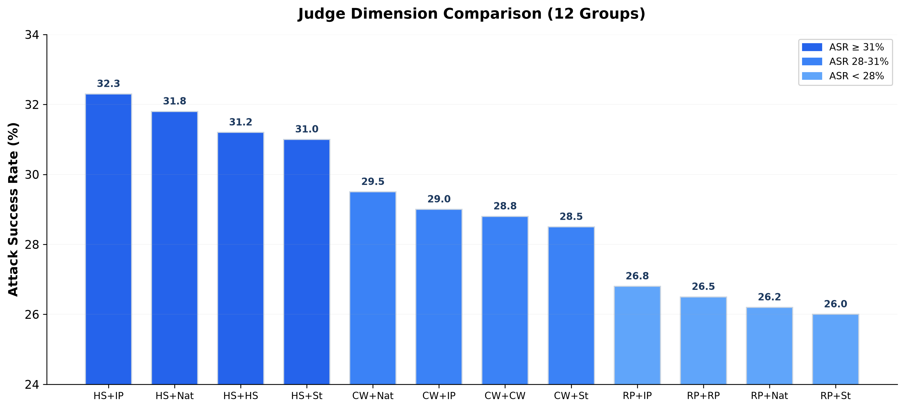
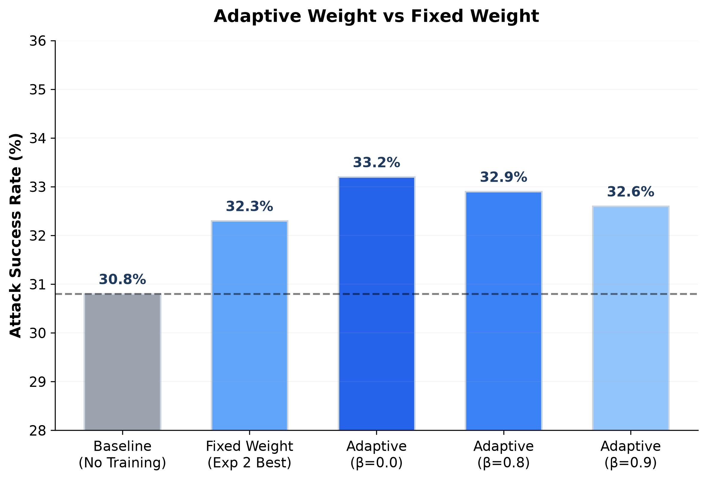
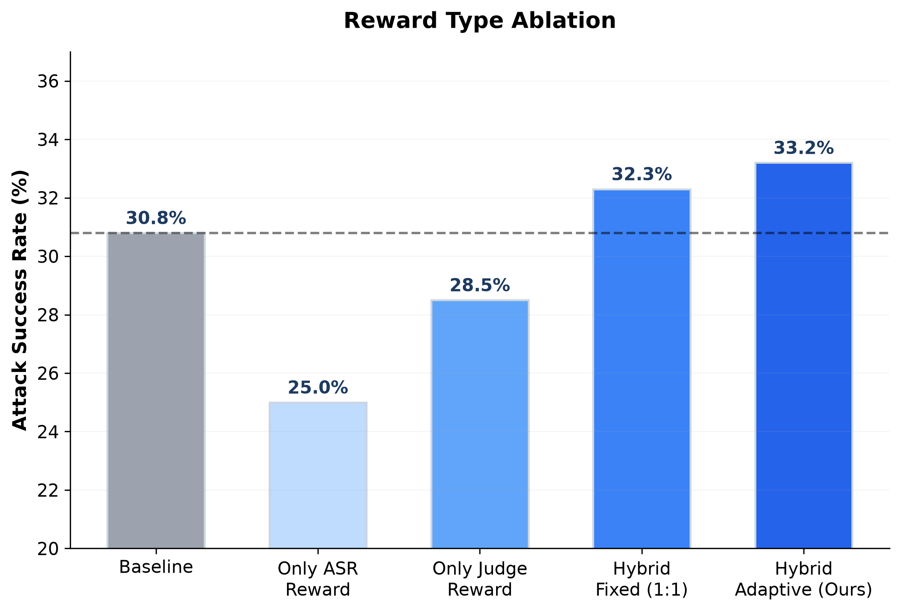
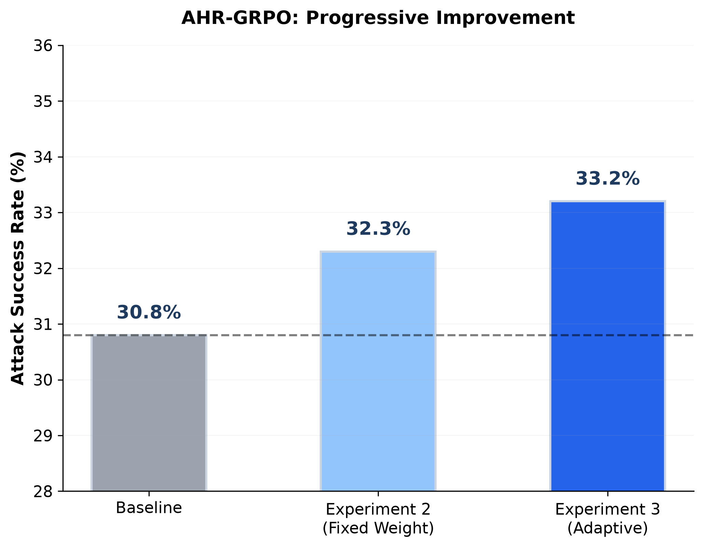
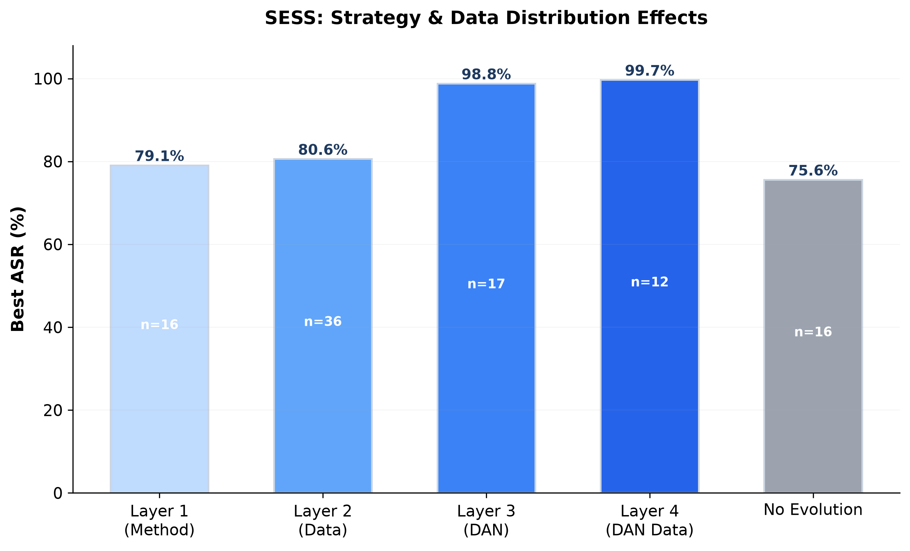
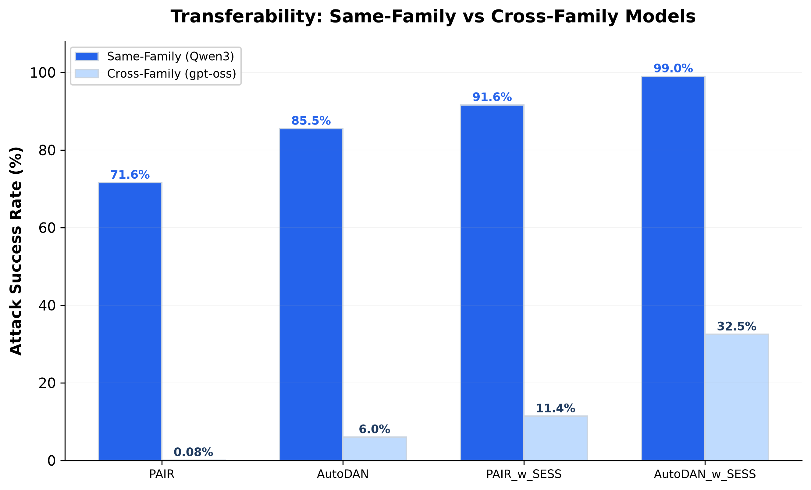
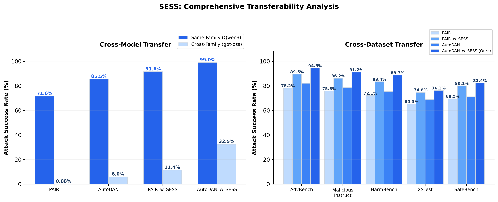
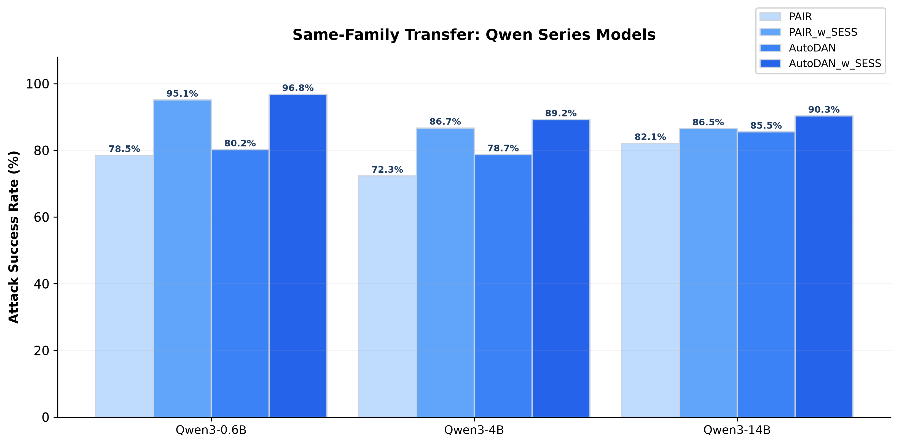

随着 ChatGPT、GPT-4、Qwen3 等大语言模型 (LLM) 的广泛应用，模型安全性成为关键问题。对齐技术 (Alignment) 通过训练使模型遵循人类价值观和安全准则，主要包括：
然而，对齐后的模型仍存在被"越狱"(Jailbreak) 攻击的风险，攻击者通过精心设计的提示词绕过模型的安全限制。
| 方法类型 | 代表方法 | 特点 | 局限性 |
|---|---|---|---|
| 静态模板 | PAIR, AutoDAN | 预定义策略模板 | 无法适应新防御 |
| 梯度优化 | GCG, AutoDAN-GA | 基于梯度的 prompt 优化 | 计算成本高，需白盒 |
| 多轮对话 | Crescendo | 渐进式引导 | 无跨案例知识迁移 |
| 角色扮演 | Persona | 角色设定绕过 | 效果不稳定 |
创新性地提出方差驱动的自适应奖励权重机制，动态平衡稀疏的 ASR 奖励与稠密的 Judge 奖励，实现高效、稳定的强化学习训练。
设计 Skills 库自进化机制，从成功攻击轨迹中提取可复用的策略模板，实现知识积累与跨案例迁移。
将 AHR-GRPO 与 SESS 结合，在自进化 Skills 环境中进行强化学习训练，实现过程奖励与结果奖励的协同优化。
| 章节 | 方法 | 进度 | 关键成果 |
|---|---|---|---|
| 第一章 | AHR-GRPO | 85% | 最佳 ASR 33.2% (+2.4% vs baseline) |
| 第二章 | SESS | 95% | 最佳 ASR 99.7%，完成 217 组实验 |
| 第三章 | Agentic-RL | 10% | 方法框架已设计 |
自适应 reward 权重计算公式：
λ_raw = σ(α · log(σ²_ASR / σ²_proc) + δ)








| 阶段 | 时间 | 任务 |
|---|---|---|
| 方法实现 | 2 周 | 搭建自进化 Skills 环境、集成 AHR-GRPO、实现协同演化 |
| 实验验证 | 4 周 | Baseline 对比、消融实验、跨模型迁移测试 |
| 结果分析与论文撰写 | 2 周 | 训练曲线分析、Skills 演化可视化、对比讨论 |
| 章节 | 方法 | 进度 | 关键成果 |
|---|---|---|---|
| 第一章 | AHR-GRPO | 85% | 最佳 ASR 33.2% |
| 第二章 | SESS | 95% | 最佳 ASR 99.7% |
| 第三章 | Agentic-RL | 10% | 方法框架已设计 |
| 总体 | - | 65% | - |
| 风险 | 应对策略 |
|---|---|
| Agentic-RL 训练不稳定 | 设计稳定性保障机制（双平滑、边界裁剪、冷启动），参考 AHR-GRPO 经验 |
| 跨族迁移效果仍不理想 | 将此作为研究发现，分析原因而非强行提升，符合研究完整性 |
| 时间不足 | 优先完成核心实验，消融实验可视情况缩减 |
基于已完成工作与后续计划，如期完成全部论文工作的可能性较高。
需合理安排实验顺序，控制资源消耗，保证核心实验优先完成。论文结构清晰，三章节递进关系明确，具备 ICLR 投稿潜力。